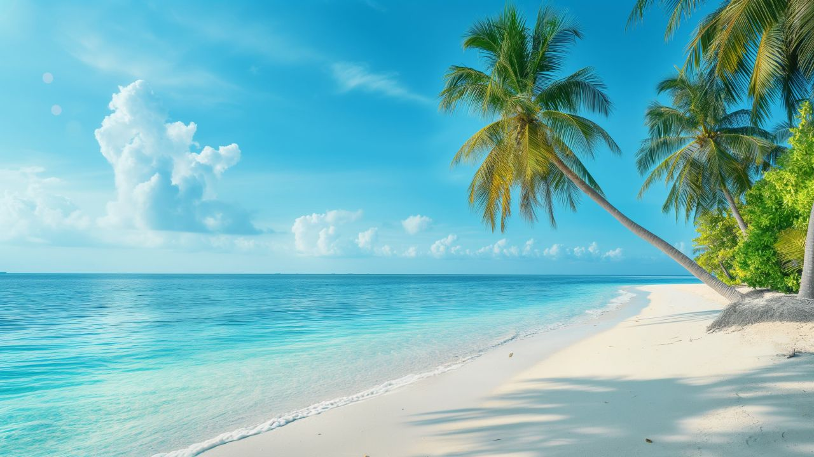

"Navagio Beach, also known as Shipwreck Beach, is one of Greece’s most iconic beaches. It features crystal-clear turquoise waters and dramatic white cliffs surrounding a sandy cove. The beach is famous for the shipwreck of the MV Panagiotis, which has become a symbol of the location. Accessible only by boat, it offers a stunning and serene environment, making it a must-visit for tourists."

"Whitehaven Beach, located on Whitsunday Island in Australia, is one of the most beautiful beaches in the world. Famous for its incredibly fine, white silica sand and crystal-clear waters, this beach offers a serene escape surrounded by lush greenery and vibrant coral reefs. The beach stretches for over 7 kilometers, providing plenty of space for relaxation and water activities. Its pristine beauty, coupled with its environmental preservation, makes Whitehaven Beach a must-visit destination for nature lovers and adventure seekers alike."

"Waikiki Beach is one of the most famous beaches in the world, located in Honolulu on the island of Oahu, Hawaii. Known for its perfect surfing waves, vibrant nightlife, and stunning views of the Diamond Head volcano, Waikiki attracts millions of visitors every year. It's a top destination for beach lovers and thrill-seekers, offering a mix of water sports, luxury resorts, and cultural experiences."

"Tulum Beach is a beautiful stretch of coastline along the Caribbean Sea in Mexico's Yucatán Peninsula. Known for its pristine white sand, turquoise waters, and bohemian vibes, Tulum is perfect for a relaxing getaway. The beach is also index to the ancient Mayan ruins of Tulum, perched on a cliff overlooking the ocean. It's an ideal spot for history buffs, beach lovers, and those seeking peace and serenity in a breathtaking setting."

"Seven Mile Beach is a picturesque stretch of white sand on Grand Cayman, known for its crystal-clear waters and serene atmosphere. Despite its name, the beach is slightly shorter than seven miles, but its beauty is unmatched. The beach is perfect for sunbathing, swimming, and water sports, with plenty of resorts, restaurants, and bars along the shoreline. It's often ranked among the best beaches in the Caribbean for its soft sand and vibrant marine life."

"Maya Bay, located on the island of Phi Phi Leh in Thailand, became famous worldwide after being featured in the movie The Beach, starring Leonardo DiCaprio. Surrounded by towering limestone cliffs, crystal-clear turquoise water, and soft white sand, this secluded paradise is a popular spot for snorkeling and relaxing. Though the beach has been temporarily closed for environmental restoration, it remains a must-see for nature lovers and film fans."

"Grace Bay Beach, located on Providenciales in the Turks and Caicos Islands, is renowned for its powdery white sand and unbelievably clear turquoise waters. Frequently ranked among the best beaches in the world, it offers calm, shallow seas thanks to a protective barrier reef just offshore. The beach stretches for about 3 miles, lined with luxury resorts and offering opportunities for snorkeling, paddleboarding, and sailing. Grace Bay’s unspoiled beauty and tranquil waters make it an ideal destination for relaxation and family-friendly beach vacations."

"Lanikai Beach, meaning 'Heavenly Sea,' lives up to its name with powdery white sand and crystal-clear waters. Located on the windward coast of Oahu, it offers a peaceful setting with views of the iconic Mokulua Islands. It's a top spot for kayaking, paddleboarding, and sunrise photography."

"Nacpan Beach, near El Nido in Palawan, is a 4-kilometer stretch of untouched golden sand lined with swaying coconut palms. Its tranquil beauty and minimal development make it a favorite for travelers seeking a quiet tropical escape. The gentle waves and scenic coastline make it ideal for swimming and walking."

"Praslin Island is often considered the most beautiful beach in Seychelles, featuring soft white sand framed by large granite boulders and lush greenery. The clear waters make it ideal for swimming and snorkeling, while the postcard-perfect setting attracts photographers and nature lovers alike."